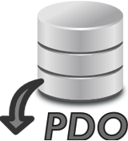

Dominio público Elaboración propia
Al igual que con la extensión MySQLi, en PDO tienes varias posibilidades para tratar con el conjunto de resultados devuelto por el método query. La más utilizada es el método fetch de la clase PDOStatement. Este método devuelve un registro del conjunto de resultados, o false si ya no quedan registros por recorrer.
$dwes = new PDO("mysql:host=localhost;dbname=dwes", "dwes", "abc123.");
$resultado = $dwes->query("SELECT producto, unidades FROM stock");
while ($registro = $resultado->fetch()) {
echo "Producto ".$registro['producto'].": ".$registro['unidades']."<br />";
}
Por defecto, el método fetch genera y devuelve a partir de cada registro un array con claves numéricas y asociativas. Para cambiar su comportamiento, admite un parámetro opcional que puede tomar uno de los siguientes valores:
- PDO::FETCH_ASSOC. Devuelve solo un array asociativo.
- PDO::FETCH_NUM. Devuelve solo un array con claves numéricas.
- PDO::FETCH_BOTH. Devuelve un array con claves numéricas y asociativas. Es el comportamiento por defecto.
- PDO::FETCH_OBJ. Devuelve un objeto cuyas propiedades se corresponden con los campos del registro.
$dwes = new PDO("mysql:host=localhost;dbname=dwes", "dwes", "abc123.");
$resultado = $dwes->query("SELECT producto, unidades FROM stock");
while ($registro = $resultado->fetch(PDO::FETCH_OBJ)) {
echo "Producto ".$registro->producto.": ".$registro->unidades."<br />";
}
- PDO::FETCH_LAZY. Devuelve tanto el objeto como el array con clave dual anterior.
- PDO::FETCH_BOUND. Devuelve true y asigna los valores del registro a variables, según se indique con el método
bindColumn. Este método debe ser llamado una vez por cada columna, indicando en cada llamada el número de columna (empezando en 1) y la variable a asignar.
$dwes = new PDO("mysql:host=localhost;dbname=dwes", "dwes", "abc123.");
$resultado = $dwes->query("SELECT producto, unidades FROM stock");
$resultado->bindColumn(1, $producto);
$resultado->bindColumn(2, $unidades);
while ($registro = $resultado->fetch(PDO::FETCH_BOUND)) {
echo "Producto ".$producto.": ".$unidades."<br />";
}